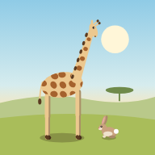

Danny Game Center
by Danny Soft

Animal World동물을 입양하고 가꾸는 관찰 게임📱 홈 화면에 바로가기 만들기
이 화면을 홈 화면에 아이콘으로 두면 한 번에 열 수 있어요.
안드로이드 · Chrome
- Chrome에서 이 페이지를 열어요.
- 오른쪽 위 ⋮을 눌러요.
- 홈 화면에 추가를 눌러요. 버전에 따라 설치 및 바로가기 만들기 → 바로가기 만들기로 나와요.
- 이름을 확인하고 추가를 눌러요.
삼성 인터넷: 아래 ≡ → 현재 페이지 추가 → 홈 화면 → 추가
아이폰 · Safari
- Safari에서 이 페이지를 열어요.
- 주소창의 ⋯ → 공유를 눌러요. 화면 아래에 공유 버튼(네모에 위 화살표)이 보이면 그걸 눌러요.
- 목록을 아래로 내려 홈 화면에 추가를 눌러요.
- 웹 앱으로 열기가 보이면 끄고, 오른쪽 위 추가를 눌러요. 꺼 두면 Safari에서 열려 게임에서 뒤로 돌아오기 쉬워요.
게임 화면에서 같은 방법으로 추가하면 그 게임만 앱처럼 설치돼요(인터넷 없이도 실행). 저장은 기기마다 그 브라우저(또는 설치한 앱)에 따로 남아요.